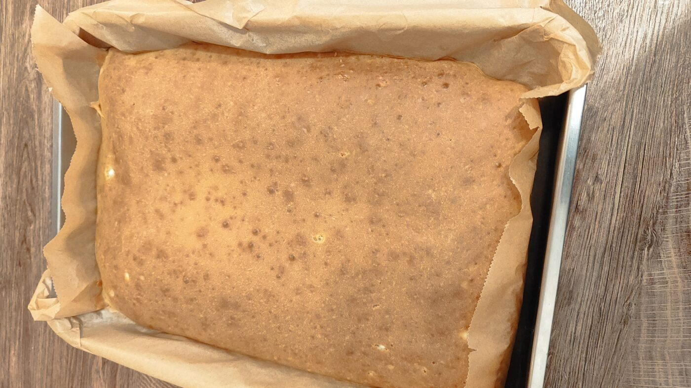

Напитка за имунитет с цитруси, джинджифил и куркума
Една доза в блендера стига за цяла седмица и повече. Цитрусите, джинджифилът, куркумата и черният пипер се пасират с мед и се замразяват на кубчета. Всяка сутрин пускаш две кубчета с щипка канела в чаша гореща вода — топло, ароматно и без чакане.

Съставки
- за кубчетата (около 24 броя)
- 1 портокал
- 1 грейфрут
- 1 лимон
- 1 парче корен джинджифил (около 3 см)
- 2 с.л. мед
- 1 ч.л. черен пипер
- 1 ч.л. куркума
- за една чаша
- 2 кубчета
- щипка канела
- около 250 мл гореща вода
- мед на вкус
Начин на приготвяне
- Обелете портокала, грейфрута и лимона, махнете белите ципи и семките — те горчат — и нарежете плодовете на парчета.
- Обелете джинджифила и нарежете 3 см от него на тънки филийки, за да се пасира по-лесно.
- Сложете в блендера плодовете, джинджифила, меда, черния пипер и куркумата и пасирайте до гладка смес.
- Разлейте сместа във форми за лед и замразете поне 4 часа. Щом стегнат, можете да прехвърлите кубчетата в плик или кутия във фризера, за да освободите формите.
- За една чаша сложете 2 кубчета и щипка канела, залейте с гореща, но не вряща вода и разбъркайте, докато кубчетата се разтопят.
- Подсладете с мед на вкус, когато напитката леко поизстине. Пийте я сутрин преди закуска.
Предложение за сервиране
Очаквайте скоро.
Защо тази рецепта си заслужава
Защо е полезна
Цитрусите са богати на витамин C, джинджифилът затопля и успокоява гърлото, а куркумата съдържа куркумин — черният пипер помага на тялото да го усвои по-добре. Напитката не замества лечение, но е приятен начин да си набавяш витамини през студените месеци.
Кога е най-подходящо да се пие
Сутрин на гладно, преди закуска, през есента и зимата. Подходяща е и вечер, когато ти е студено и искаш нещо топло без кофеин.
Какво дава на тялото
Една чаша (2 кубчета) без допълнителния мед: около 31 ккал и витамин C от пресни цитруси. С една лъжичка мед отгоре стават около 50 ккал.
Как да я съхраняваш
Кубчетата издържат във фризера до 2 месеца в затворен плик или кутия. Една доза стига за около 12 чаши.
Още рецепти в същия дух
Топла киноа с броколи и зелен боб
Ронлива киноа със задушени броколи и зелен боб, освежена с лимонова кора, мента и зехтин — топло постно ястие за около 30 минути.
Булгур с домати и куркума
Ронлив булгур, задушен с лук, червен пипер и куркума и довършен с пресни домати и джоджен — постно основно или гарнитура за 30 минути.

Мързелива баница със сирене
Баница без точене и без кори — тесто от яйца, кисело мляко и брашно с натрошено сирене, изпечено до златисто за половин час.